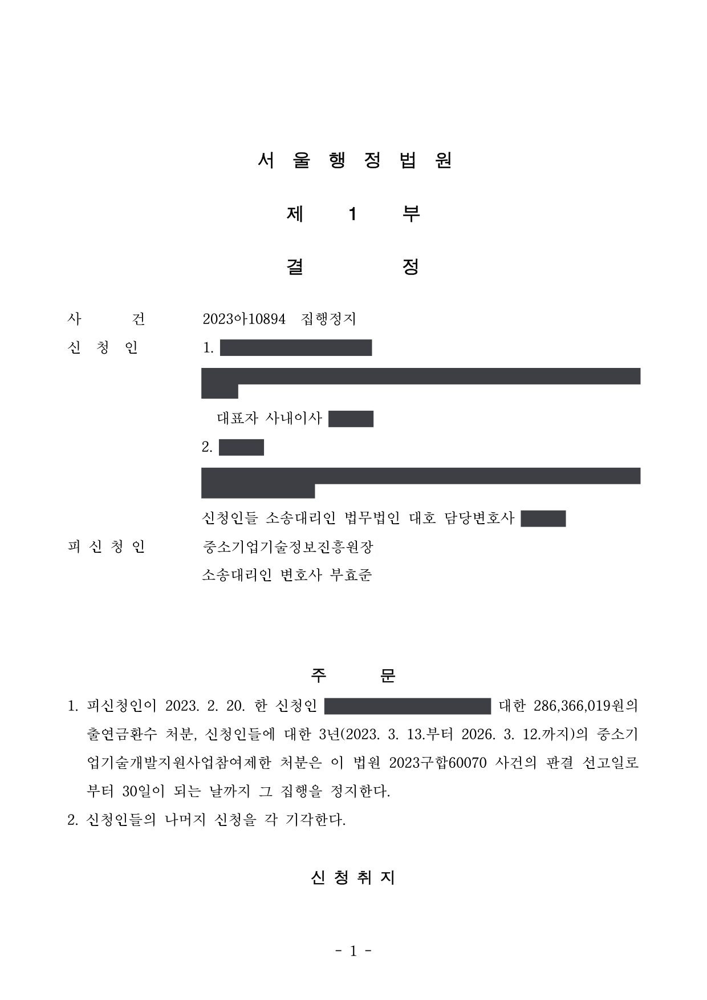

국가연구개발사업 출연금 환수·참여제한처분 취소소송 및 집행정지
서울행정법원 2023구합60070 · 2023아10894 · 담당변호사 부효준
판결문


사건의 요지
구매조건부 신제품개발 과제의 수행 결과를 이유로 한 출연금 환수처분과 3년 참여제한처분에 관하여 주위적·예비적 청구의 적법성과 처분사유가 다투어진 사건입니다. 집행정지 사건을 함께 수행했습니다.
사건의 주요 내용
원고 회사는 멸균·소독장비를 개발하는 기업으로, 2019년도 구매조건부 신제품개발사업(국내수요처)에 '공간·표면 멸균 장치 개발 과제'로 선정되어 2019년 6월 전문기관과 개발기간 24개월(2019년 6월~2021년 5월), 정부출연금 3억 6,000만 원(총 사업비 6억 원)의 협약을 체결하였습니다. 원고 회사의 대표자가 과제책임자로서 함께 원고가 되었습니다.
전문기관은 2021년 제보를 받아 특별점검을 실시한 뒤 2021년 5월 특별평가에서, 원고 회사와 수요처가 출자관계에 있어 협약 당시 신청자격을 충족하지 못하였고 과제에 직접 참여하지 않은 인력 4명의 인건비 89,437,791원을 인정할 수 없다는 이유로 과제를 '중단(성실)'으로 판정하였습니다. 원고 회사의 이의신청은 2021년 10월 받아들여지지 않았습니다.
전문기관은 2023년 2월 중소기업 기술혁신 촉진법 제31조·제32조 등을 근거로 원고 회사에 3년의 참여제한과 정부출연금 중 정산금·자동회수금을 제외한 286,366,019원의 환수처분을, 대표자에게 3년의 참여제한처분을 하였고(1차 처분), 2023년 3월 환수처분에 대한 이의신청을 받아들이지 않으면서 참여제한 기간을 조정한 통지를 하였습니다(2차 통지). 원고들은 주위적으로 1차 처분의 취소를, 예비적으로 2차 통지의 취소와 무효확인을 구하는 소송을 제기하고 집행정지를 신청하였으며, 법원은 2023년 4월 1차 처분의 집행을 본안 판결 선고 후 30일까지 정지하였습니다.
쟁점
- 이의신청을 받아들이지 않으면서 참여제한 기간만 조정한 2차 통지가 1차 처분을 대체하는 새로운 처분인지, 아니면 1차 처분이 여전히 항고소송의 대상인지
- 주관기관과 수요처가 직접 상호 출자하지 않았더라도 주주의 가족관계 등에 비추어 계열회사 또는 사실상 출자지분 관계로 보아 '거짓이나 그 밖의 부정한 방법으로 연구개발에 참여'한 경우에 해당하는지
- 행정·회계 업무를 담당한 직원 등에게 지급한 인건비가 출연금의 용도 외 사용인지, 특별평가위원회의 평가결과를 소송에서 뒤집을 수 있는지
원고의 주장
- 원고 회사는 공고에 기재된 신청자격을 준수하였고, 설령 자격을 갖추지 못하였더라도 공고 내용 때문에 착오가 생긴 것이므로 '거짓이나 그 밖의 부정한 방법으로 연구개발에 참여'한 것이 아니라고 주장하였습니다.
- 인건비가 문제된 연구원들은 실제로 과제에 참여하였으므로 출연금을 용도 외로 사용한 것이 아니라고 주장하였습니다.
- 전문기관이 원고들에게 유리한 사정을 참작하지 않고 법정 최장기간의 참여제한과 환수처분을 하였으므로 재량권을 일탈·남용하였다고 주장하였습니다.
부효준 변호사의 주장
- 본안 전 항변으로, 1차 처분은 2차 통지로 효력을 잃었으므로 1차 처분의 취소를 구하는 주위적 청구는 부적법하다고 주장하였습니다.
- 공고와 관리지침은 수요처와 계열회사이거나 출자지분 관계가 있는 기업의 참여를 배제하는데, 원고 회사의 주주들은 수요처 최대주주의 가족으로 동일인관련자 지분이 수요처 지분의 30%를 넘고, 원고 회사가 수요처 사업장에 주소를 두고 수요처에 업무보고를 하며 채용공고에서 수요처의 자회사라고 밝힌 점 등에 비추어 사실상 계열회사인데도 이를 알리지 않고 참여한 것은 부정한 방법에 의한 참여라고 주장하였습니다.
- 특별점검 당시 직원들의 진술과 확인서에 따르면 문제된 연구원들은 행정·회계 업무를 맡았거나 참여 내역이 확인되지 않으므로 인건비 집행은 용도 외 사용이고, 전문가로 구성된 특별평가위원회의 판단은 존중되어야 하며, 소송에서 비로소 제출된 연구노트와 확인서는 믿기 어렵다고 주장하였습니다.
법원의 판단
법원은 본안 전 항변은 받아들이지 않았습니다. 2차 통지는 1차 처분이 유효함을 전제로 이의신청을 받아들이지 않은 통지에 불과하고 참여제한 기간의 조정은 이의신청권 보장에 따른 부수적 결과이므로, 항고소송의 대상은 1차 처분이라고 보았습니다. 같은 이유로 2차 통지의 취소·무효확인을 구하는 예비적 청구는 처분이 아닌 것을 대상으로 한 소로서 모두 각하되었습니다.
본안에서는 '거짓이나 그 밖의 부정한 방법'의 의미에 관한 대법원 판례(2012. 12. 27. 선고 2011두30182 판결 등)를 전제로, 원고 회사와 수요처는 주주 구성과 주소, 업무보고, 채용공고 등에 비추어 계열회사 혹은 사실상 출자지분 관계가 있는 회사인데도 이를 알리지 않고 참여하여 출연금을 받았으므로 처분사유가 인정된다고 하였습니다. 제재처분은 고의가 없어도 부과될 수 있고, 착오가 전적으로 공고 때문이라고 볼 수도 없다고 보았습니다.
인건비에 관하여는 특별점검표와 직원 확인서, 재직기간 등에 비추어 세 연구원이 과제에 직접 참여하였다고 보기 어렵고, 전문적·기술적 영역에서 평가위원들이 내린 판단은 하자가 없는 한 존중되어야 하며 소송에서 제출된 연구노트·확인서로는 이를 뒤집기 부족하다고 판단하였습니다. 자격 없이 참여하고 약 8,900만 원을 용도 외로 사용한 위법의 정도가 가볍지 않다는 등의 이유로 재량권 일탈·남용도 부정하여 주위적 청구를 모두 받아들이지 않았습니다.
중소기업기술혁신법 제31조 제1항 제8호는 참여제한 및 환수처분의 사유로 '거짓이나 그 밖의 부정한 방법으로 연구개발에 참여하거나 수행한 경우'를 규정하고 있다. 여기에서 말하는 거짓이나 그 밖의 부정한 방법으로 연구개발에 참여하거나 수행한 경우라 함은 일반적으로 기술개발 사업비 명목으로 정부출연금을 지급받을 자격이 없는 자가 그 자격이 있는 것처럼 꾸미거나 그 자격 없는 사실을 감추려는 사회통념상 옳지 못한 일체의 부정행위로서 정부출연금 지급에 관한 의사결정에 영향을 미칠 수 있는 적극적 및 소극적 행위를 의미한다(대법원 2012. 12. 27. 선고 2011두30182 판결, 대법원 2007. 12. 27. 선고 2006도8870 판결 등 참조).
서울행정법원 2023구합60070 판결 이유 '4. 나. 2) 거짓이나 그 밖의 부정한 방법으로 이 사건 사업에 참여하였는지 여부 — 가)'
그러나 행정법규 위반에 대하여 가하는 제재조치는 특별한 사정이 없는 한 원고들의 고의가 없었다고 하더라도 부과될 수 있다(대법원 2003. 9. 2. 선고 2002두5177 판결 등 참조). 나아가 중소기업기술혁신법의 취지에 비추어 사실상 중소기업이 아닌 회사나 그 계열회사에 출연금이 지급되는 것이 적절하지 않다는 것은 누구가 쉽게 짐작할 수 있다는 점이나, 앞서 살펴 본 원고 회사와 수요처의 주주 및 주주간 관계, 원고 회사의 주소나 채용공고에서 드러나는 원고 회사와 수요처와의 관계 등을 고려하면, 원고들에게 고의·과실이 없었다거나 그 착오가 온전히 이 사건 공고에 의해 유발되었다고 평가할 수도 없다.
서울행정법원 2023구합60070 판결 이유 '4. 나. 2) 다)'
이 사건 과제의 개발 내용 및 범위에 비추어 보면, 이 사건 과제에 연구원으로 등록된 인력들이 해당 과제를 실제로 수행하였는지 여부 및 수행 결과물과 해당 과제의 연관성 등은 전문적이고 기술적인 영역을 포함하고 있는바, 이와 같이 전문적이고 기술적인 영역에서 평가위원들이 내린 평가결과는 그 과정이나 내용에 하자가 없는 한 최대한 존중되어야 한다.
서울행정법원 2023구합60070 판결 이유 '4. 나. 3) 연구원에 대한 인건비를 이 사건 과제 외 용도로 사용하였는지 여부 — 다) (1)'
※ 판결 이유 가운데 이 사건의 판단 기준이 된 부분을 그대로 옮긴 것으로, 당사자 이름 등은 가렸습니다.
이 사건이 보여 주는 것
구매조건부 신제품개발사업처럼 수요처와의 관계가 신청자격 요건인 사업에서는, 직접 상호 출자가 없더라도 주주들의 가족관계, 사업장 공유, 업무보고 관행, 스스로 '자회사'라고 밝힌 채용공고 등 실질적 사정을 종합하여 계열회사 또는 사실상 출자관계로 판단될 수 있습니다. 그 사실을 알리지 않고 참여하면 고의가 없었더라도 '부정한 방법에 의한 참여'로 보아 출연금 전액 환수와 참여제한이 이루어질 수 있습니다.
참여연구원 인건비 역시 특별점검 당시 직원들의 진술과 확인서가 결정적 자료가 되었고, 소송 단계에서 뒤늦게 제출된 연구노트나 확인서는 신빙성을 인정받지 못하였습니다. 또한 이의신청 결과 통지는 별개의 처분이 아니므로 소송은 원처분을 대상으로 제기해야 한다는 점도 이 판결에서 확인되었습니다.
관련 법령중소기업 기술혁신 촉진법 제29조 제1항, 제31조 제1항 제4호·제8호, 제32조 제1항 · 중소기업 기술혁신 촉진법 시행령 제19조 제1항, 제20조, 제21조, 별표 2 · 중소기업기술개발 지원사업 운영요령 제29조, 별표 3 · 독점규제 및 공정거래에 관한 법률 제2조 제12호 · 행정소송법 제23조(집행정지)
관련 단어참여제한출연금 환수구매조건부 신제품개발사업신청자격 위배수요처 출자관계계열회사거짓이나 부정한 방법참여연구원 인건비 불인정특별평가이의신청 결과 통지 처분성예비적 청구 각하집행정지처분 적법
비슷한 처분을 받으셨다면
국가연구개발 제재처분은 사전통지를 받은 날부터 20일 이내에 재검토 요청 의견을 내고, 처분이 있음을 안 날부터 90일 이내에 취소소송을 제기해야 합니다. 처분서나 사전통지서를 받은 날짜부터 확인해 드립니다.